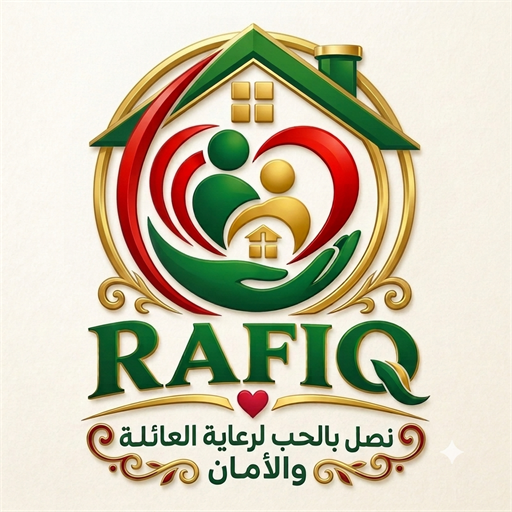

📄 خدمات CV وCover Letters من RAFIQ
إعداد مهني بالعربية والإنجليزية، بصيغتي PDF وWord، مع مراعاة قابلية القراءة بواسطة ATS.
الخدمات والأسعار
CV احترافي$25 بدل $35
Cover Letter$10 بدل $16
CV + Cover Letter$35 بدل $51
لغة إضافية+$20 بدل +$28
الدفع المسبق عبر Whish Money فقط. لا ترسل ملفات CV أو مستندات شخصية قبل تأكيد الدفع من إدارة RAFIQ. لا تشارك كلمة مرور Whish أو رمز OTP.
يبدأ إعداد الملف بعد مراجعة الإدارة لتأكيد الدفع والاتفاق على الخدمة المطلوبة.